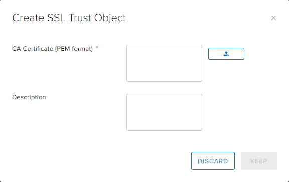
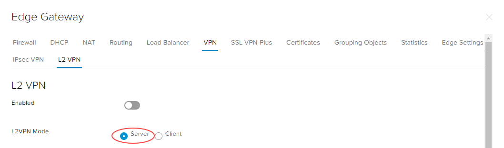
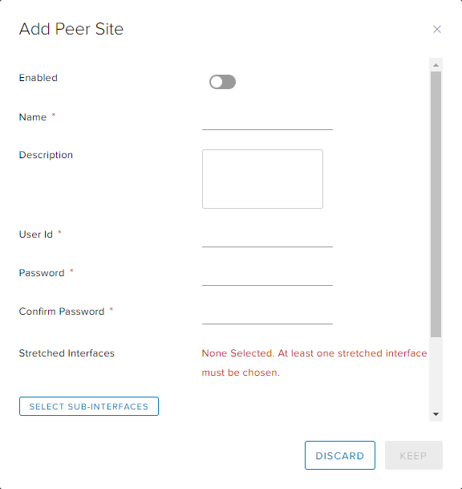

How to configure an L2 VPN
Overview
UKCloud for VMware provides Layer 2 (L2) VPN functionality as part of its Advanced Management bundle (additional charges apply). With L2 VPN you can stretch the same Layer 2 broadcast domain over an SSL tunnel across two edge gateways in different sites, meaning that you can move your workloads seamlessly between sites without having to change IP addresses.
L2 VPN is an extension of the edge's SSL functionality. It enables you to configure a tunnel between two sites, extending a logical switch across both sites. The tunnel means that virtual machines (VMs) remain on the same subnet if they are moved between the two sites, enabling you to extend your data centre across multiple sites. An NSX edge at one site can provide all services to VMs on the other site.
UKCloud L2 VPN functionality covers three scenarios:
L2 connectivity between UKCloud regions

Connectivity from your own on-premises site (with vSphere and NSX) to UKCloud
L2 connectivity from any remote site (without vSphere and NSX) to UKCloud

Before you begin
Before enabling L2 VPN, consider the following:
You must have purchased the Advanced Management bundle for your UKCloud for VMware service
You must have converted your edge gateway to an advanced gateway (see How to convert your edge to an advanced gateway)
This service takes up one of your allocated IP addresses (primary or secondary)
L2 VPN can be enabled only on a routed Org VDC network
You cannot use SSL VPN on any edge gateway running L2 VPN
You may encounter issues with IPsec VPN
You cannot use load balancers using HTTPS on primary or secondary edge gateway addresses once L2 VPN is enabled
You'll need to change any existing NAT and firewall rules using the primary or secondary IP of the edge for HTTPS
If your remote site does not have vSphere or NSX, you'll need to deploy a standalone edge as the L2 VPN client (see Deploying a standalone edge as an L2 VPN client)
Configuring L2 VPN
To set up L2 VPN, you need to configure an L2 VPN server on the destination edge and an L2 VPN client on the source edge. You must then enable the L2 VPN service on both the server and the client. If one of the sites that you want to stretch is not backed by NSX, you can deploy a standalone edge as the L2 VPN client on that site (see Deploying a standalone edge as an L2 VPN client).
Setting up the network
Create a routed VDC network on both the source and destination sites.
For more detailed instructions, see How to create a routed VDC network.
Note
To stretch the subnet across the two sites, make sure you use the desired address space on both networks.
For each network, select the network and, on the General tab, click Edit
In the Edit network dialog box, select the Connection tab.
From the Interface Type list, select Subinterface to connect the network as a subinterface to the trunk interface on the attached gateway, then click Save.
To be able to move, your VMs need to be able to access your new network, so you need to attach them to it.
Creating certificates
In vCloud Director, access the edge gateway settings for the destination edge gateway.
For more detailed instructions, see How to access edge gateway settings.
Select the Certificates tab.
Click + CA Certificate.

Add the certificate to use for the L2 VPN server then click Keep.

Repeat this process for the source edge gateway.
Configuring the L2 VPN server on the destination edge gateway
The L2 VPN server is the destination edge gateway to which the client is to be connected.
In vCloud Director, access the edge gateway settings for the destination edge gateway.
For more detailed instructions, see How to access edge gateway settings.
Select the VPN tab, then the L2 VPN tab.
For L2VPN Mode, select Server.

On the Server Global tab, from the Listener IP list, select the primary or secondary IP address of an external interface of the NSX edge.
In the Listener Port field, enter the port to use for your L2 VPN. The default port is
443.Select the Encryption Algorithm to use for communication between the server and the client.
In the Service Certificate Details section, click Change Server Certificate.

Select the Validate Server Certificate option, select the certificate you created earlier then click OK.
Click Save changes.
Select the Server Sites tab.
Click the + button.

In the Add Peer Site dialog box, specify details for the peer site to enable other sites to connect to the L2 VPN server, then click Keep.

Click Save changes.
Configuring the L2 VPN client on the source edge gateway
The L2 VPN client is the source edge gateway that initiates communication with the destination edge (L2 VPN server).
Note
If the source site is not backed by NSX, you can deploy a standalone edge as the L2 VPN client. For information see Deploying a standalone edge as an L2 VPN client.
In vCloud Director, access the edge gateway settings.
For more detailed instructions, see How to access edge gateway settings.
Select the VPN tab, then the L2 VPN tab.
For L2VPN Mode, select Client.

In the Server Address field, enter the address of the L2 VPN server that you set up in the previous section. The address can be the host name or IP address.
In the Server Port field, enter the port to use for your L2 VPN. The default port is
443.Select the Encryption Algorithm for communicating with the server.
Click Select Sub-Interfaces and select the sub interfaces to be stretched to the server.
In the Egress Optimization Gateway Address field, if the default gateway for VMs is the same across the two sites, enter the gateway IP addresses of the sub interfaces or the IP addresses to which traffic should not flow over the tunnel.
In the User Details section, enter the user credentials to connect to the L2 VPN server.

Click Save changes.
Completing L2 VPN configuration
Configure TCP optimisation.
Configure firewall and NAT rules on both the destination and source edge gateways to allow traffic to pass between the L2 VPN server and the L2 VPN client.
Enable L2 VPN on the destination edge gateway.
In vCloud Director, access the edge gateway settings.
For more detailed instructions, see How to access edge gateway settings.
Select the VPN tab, then the L2 VPN tab.
For L2VPN Mode, select Server.
Select the Enabled option.

Click Save changes.
Repeat the steps above to enable L2 VPN on the source edge gateway (setting L2VPN Mode to Client).
Deploying a standalone edge as an L2 VPN client
If the source site is not backed by NSX, you can deploy a standalone edge as the L2 VPN client.
Download
NSX-l2vpn-client.ovfand deploy the standalone edge.For more information, see the following VMware article: Configure Standalone Edge as L2 VPN Client.
Convert the edge gateway to an advanced gateway.
For more information, see How to convert your edge to an advanced gateway.
Create a port group and convert it to a sub interface.
You can now set up your L2 VPN by following the steps below, using the standalone edge as the source edge gateway.
Note
Make sure you change any existing NAT rules to use other addresses.
Feedback
If you find an issue with this article, click Improve this Doc to suggest a change. If you have an idea for how we could improve any of our services, visit the Ideas section of the UKCloud Community.